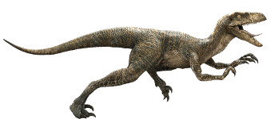

<section>
    <article>
        <header>
            <h2 class="dinossauroTitulo">Velociraptor</h2>
        </header>
        
        <div class="dinossauroDescricao">
            <p>
            Velociraptor (em português, velociraptor ou velocirraptor),[1] é um gênero de dinossauros terópodes que viveram aproximadamente a 75 a 71 milhões de anos atrás, durante a última parte do período Cretáceo.[2] Duas espécies são reconhecidas atualmente, embora outras tenham sido atribuídas no passado. A espécie-tipo é V. mongoliensis; fósseis desta espécie foram descobertos na Mongólia. A segunda espécie, V. osmolskae, foi nomeado em 2008 a partir do crânio encontrado na Mongólia Interior, China.
            </p>
        </div>
    </article>
</section>
